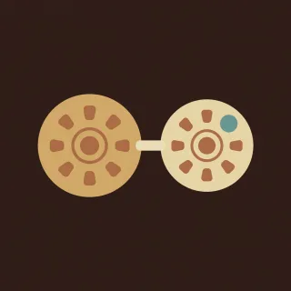

Hands · handpan drill for D Kurd
Left, then right
Each note on the left is answered from the right.

- Kind
- Hands
- Tempo
- 74 BPM
- Time signature
- 4/4
- Length
- 2 bars, about 6 seconds
- Notes used
- B♭3, C4, D4, E4, F4, G4, A4, C5
- Added
- 2026-10-09
Play in AlamutLearn bar by bar
About this pattern
B-flat then C. D then E. F then G. High A then high C. The left hand starts each pair. The right hand answers.
Notation
Each line is one bar in 4/4. Numbers are the pan's fields, a dot is a rest, brackets hold notes struck together, and × is a tak on the shoulder. Read the number legend below.
2 3 4 56 7 8 9
Number legend
0D3 (ding), 146.8 Hz1A3, 220.0 Hz2B♭3, 233.1 Hz3C4, 261.6 Hz4D4, 293.7 Hz5E4, 329.6 Hz6F4, 349.2 Hz7G4, 392.0 Hz8A4, 440.0 Hz9C5, 523.3 Hz×tak, a rim or shoulder tap
چپ، بعد راست
هر نت سمت چپ از سمت راست جواب میگیرد.
سیبمل، بعد دو. رِ، بعد می. فا، بعد سل. لای بالا، بعد دوی بالا. دست چپ هر جفت را شروع میکند. دست راست جواب میدهد.
More Hands
Short hand-alternation drills that teach where the notes sit and which hand reaches them.